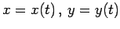

Inhalt Index DeskTop Bronstein

 Differentialrechnung Differentiation von Funktionen einer Veränderlichen Ableitungen höherer Ordnung
Differentialrechnung Differentiation von Funktionen einer Veränderlichen Ableitungen höherer Ordnung


Wenn die Funktion y=f(x) in der Parameterform  gegeben ist, dann lassen sich ihre Ableitungen höherer Ordnung ( usw.) nach den folgenden Formeln berechnen, wobei usw. die Ableitungen nach dem Parameter t bedeuten:
| (6.24) |
Voraussetzung ist, daß  gilt.
gilt.